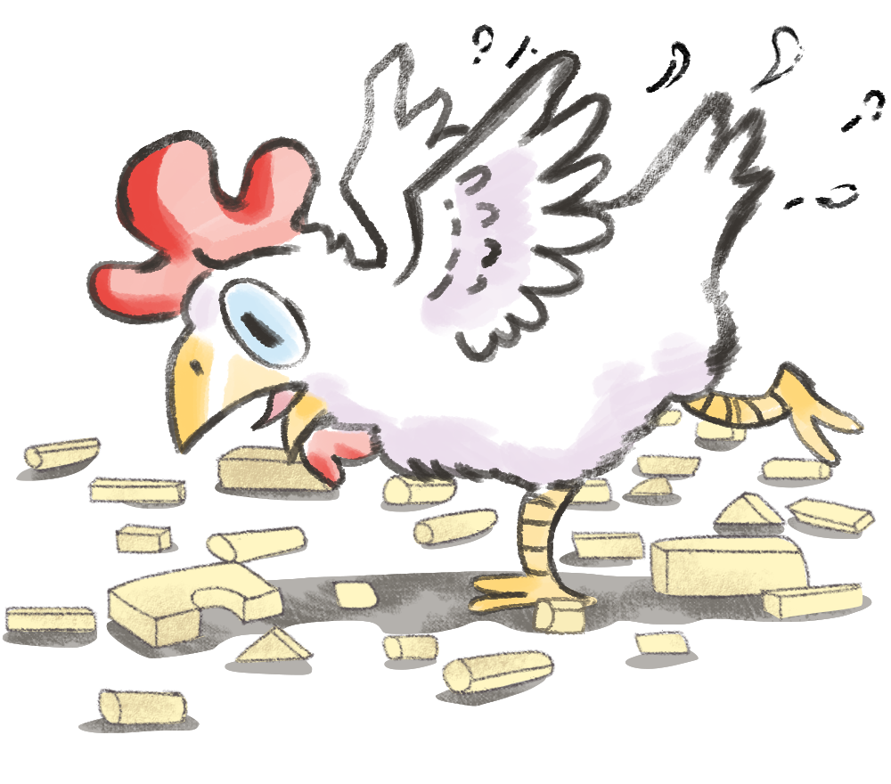
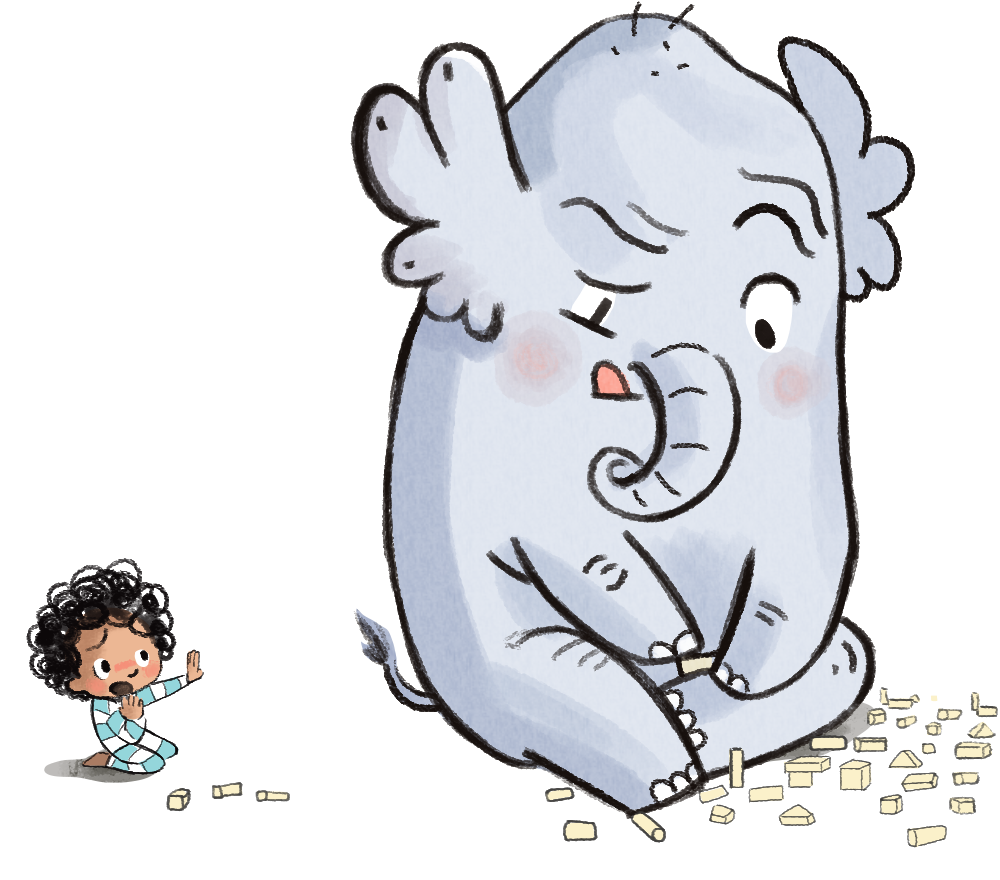

어느 날, 테일러는 뭔가를 만들기로 했어.
뭔가 새로운 거. 뭔가 특별한 거. 뭔가 놀라운 거.
테일러는 정말 뿌듯했지.
그런데 난데없이 새들이 날아와……
모든 게 무너져 버리고 말았어.
- 이야기
- 물음
-
-
추가 질문
-
추가 질문처음 알아챈 건 닭이었어.
“꼬꼬댁 꼬꼬꼬! 이를 어째, 어떻게 이런 일이!
말해 봐. 말해 봐. 어떻게 된 건지 말해 봐!
꼬꼬댁 꼬꼬꼬!”
하지만 테일러는 말하고 싶지 않았어.
그래서 닭은 그만 가 버렸지. -
추가 질문다음엔 곰이 왔어.
“이런, 끔찍해. 정말 화나겠다.
그럴 땐 소리를 질러!
크와아아아아앙!”
하지만 테일러는 소리 지르고 싶지 않았어.
그래서 곰도 그만 가 버렸지. -
추가 질문다음에 다가온 건 코끼리였어.
“뿌우우우! 내가 고쳐 줄게.
원래 어떤 모양이었는지 잘 떠올려 봐.”
하지만 테일러는 떠올리고 싶지 않았어.
그래서 코끼리도 그만 가 버렸지.
테일러는 혼자 남았어. -
너무 조용해서 테일러는 토끼가 다가오는
줄도 전혀 몰랐어.
토끼는 조금씩, 조금씩 다가왔지.
테일러가 따뜻한 체온을 느낄 때까지,
둘은 말없이 앉아 있었어. -
추가 질문이윽고 테일러가 말했어. “나랑 같이 있어 줄래?”
토끼는 테일러의 이야기를 가만히 들어 주었어.
토끼는 테일러가 소리 지르는 것도 가만히 들어 주었어.
토끼는 테일러가 기억해 내고……
우는 것도 들어 주었어.
그러는 내내, 토끼는 테일러의 곁을 떠나지 않았어.
-
-
-
친구들은 슬퍼하는 테일러에게 어떤 말이나 행동으로 공감해 주었나요?
친구 테일러에게 공감해 준 방법 닭 어떻게 된 건지 말해 보라고 했습니다.곰 소리 지르면서 화를 풀어 보라고 했습니다.코끼리 부서진 장난감을 고쳐 주려고 했습니다.토끼 테일러 옆에 가만히 있어 줬습니다. -
테일러에게 필요한 공감 방법은 무엇이었나요?
가만히 옆에 있어 주는 것이었습니다.토끼는 테일러에게 필요한 공감 방법을 어떻게 알았을까요?
토끼는 자신의 공감 방법을 강요하지 않고
테일러에게 필요한 공감하는 방법이 무엇인지 살펴보았습니다. -
추가 질문
만약에 여러분이 테일러와 같은 상황이라면 친구들이 어떻게 해 주는 것이 좋은가요?
저는 부서진 것을 같이 고쳐 주는 것이 좋습니다.
-